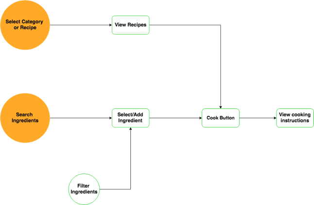
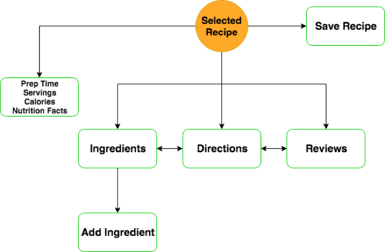
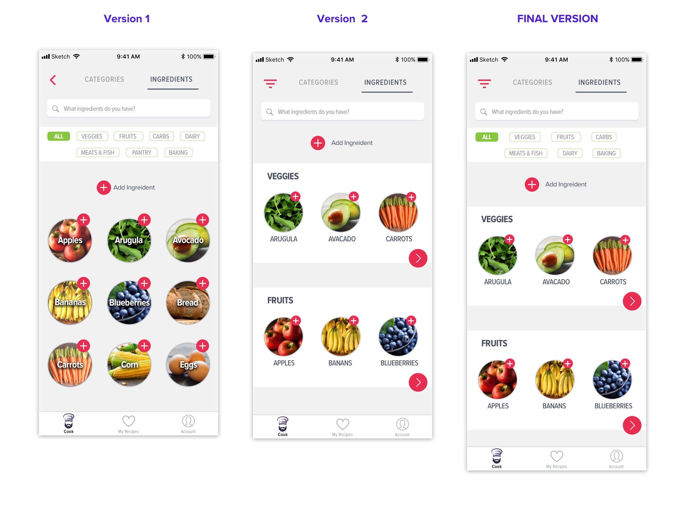

CHEF O
Discovery | Ideation | Implementation
Not your average cooking app, Chef O recipies are fresh, easy and delicious.
Find recipies based on the ingredients you have and let Chef O help you decide.
VIEW PROTOTYPE
DISCOVERY
To better understand the user, I surveyed over 50 respondants on their cooking habits from expert foodies
to non cooks. Below are the findings that helped guide my design process.
72% cook 3-5 times per week at home
60% cook for 2-5 people daily
95% choose quick meals, then vegetarian, low sugar & fat
80% stated biggest frustration: can’t decide what to eat
85% said it would be easier to cook if they had the ingredients
 57% stated current apps too complex for quick cooking
57% stated current apps too complex for quick cooking
PERSONAS
Users enjoy or want to cook at home but are frustrated by deciding what to cook with what they have.
I interviewed three potential users to fully understand their cooking goals.
COMPETITIVE ANALYSIS
After speaking with users, many of them want to cook at home more but are often impacted by time,
personal health requirements, or not knowing what to cook with what they have. Although there are
many cooking apps out there, it was important to create an experience that makes people want to
cook at home more. Below are three cooking competitors where I asked users to tell me what they like
or dislike about them.

Users Liked
Modern design
Unique reviews
Users Disliked
Complicated recipies
Difficult toggle between ingredients
Users Liked
Variety of recipies
Easy to follow design
Users Disliked
Information overload
Some recipies not found
Users Liked
Can search ingredients
Easy to follow recipies
Users Disliked
Recipies don't show images
Outdated recipies or design
IDEATION
After researching the users, market, and trends, I discovered
there is still a need for an easy, clean, and engaging cooking experience. Keeping
this in mind, I created user flows that:
1. ) Helps the user make a quick decision based on what they want or have and
2. ) Displays recipie information in a way that is easy to read while cooking.
Decide What to Cook with Personalized Filters

Choose Recipe and Review Directions

BRANDING
Based on my research, I wanted to create a brand concept that was simple, modern, and memorable
for easy home cooking. While sketching possible logo ideas, I was ultimately inspired by my bearded
foodie husband, Omneet. As a non cook myself, I was fortunate to marry an amazing cook who can come
up with great meals using simple, every day ingredients, a major user goal. Taking this idea, Chef O
was created using stocklogos, an energized, reliable chef who can tell you what to eat and how to make it.
WIREFRAMES
I created wireframes to help visualize the UI and asked potential users to go through each screen with me.
I transitioned my drawings to Sketch to align with IOS design guidelines and maintain a consistent, clean
flow.
IMPLEMENTATION
Throughout the wireframe process, I tested various UX and visual elements with users
to ensure an engaging experience. For example, a major user goal is to browse and add
ingredients you already have to find recipies. Below are three versions for this experience,
which could be displayed alphabetically or by category. Users found Option B, ingredients
listed horizontally, the most easy to use and get started, yet found the scrolling distracting.
Taking this feedback, I added categories on top to filter ingredients, to keep
the user focused on the end goal.

Testing visual UX elements was also important to highlight easy cooking and a memorable brand.
Below are two versions of recipie filters each of which portray a different cooking experience.
Users found version B engaging but also intimidating. Ultimately, version A was best as it again
helped the user focus on the end goal using color more strategically.
PROTOTYPE
Throughout the design process, I learned how to get through complex UI challenges such as how
to categorize ingredients logically and work with conflicting user feedback. My goal was to create
an inspiring recipe app for easy, everyday cooking. You can view the full prototype below and experience
Chef O recipies.
VIEW FINAL DESIGN